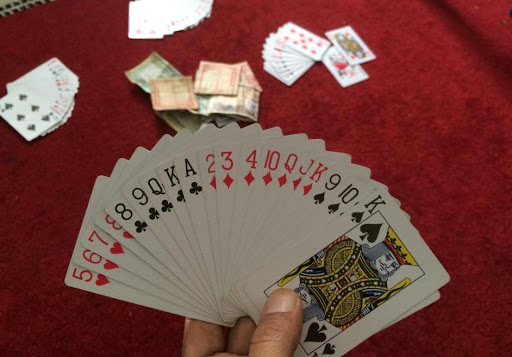

| 
|
A kártyajáték pontos eredete nem ismert. Kínában, Indiában, Perzsiában egyaránt fellelhetőek voltak kártyajátékok, különböző időkben.
A póker az egyik legnépszerűbb kártyajáték a világon. A lényege, hogy a játékosok a nyílt vagy zárt kártyáikból a legjobbat kihozva elvigyék az asztal közepén lévő kasszát (angolul pot-ot). Ezt a legjobb lap kombinációval tehetik meg, tehát minden játékosnak arra kell törekednie, hogy a saját kezében legyen a legjobb.
A Texas Hold’Em a közösségi pókerjátékok legnépszerűbb változata. Általában 2 és 10 közötti játékos vesz részt a játékban, habár elméletileg 22 játékos is játszhatná (23, ha nincsenek égető lapok). A legzártabb pókerjáték, a fogadások sorrendje állandó. Vitatott, hogy szerencsejáték-e, vagy sport, melyben szerepet játszik a szerencse is.
Nagyon szórakoztató játék, és ha ügyes vagy benne, akár még pénzt is lehet vele keresni.
| Hobbik | Film/Sorozat nézés | Kirándulás | Kártyajátékok | Floorball |